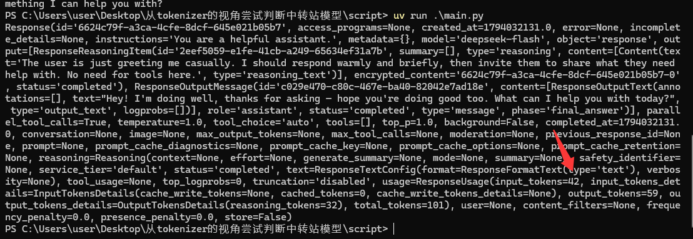
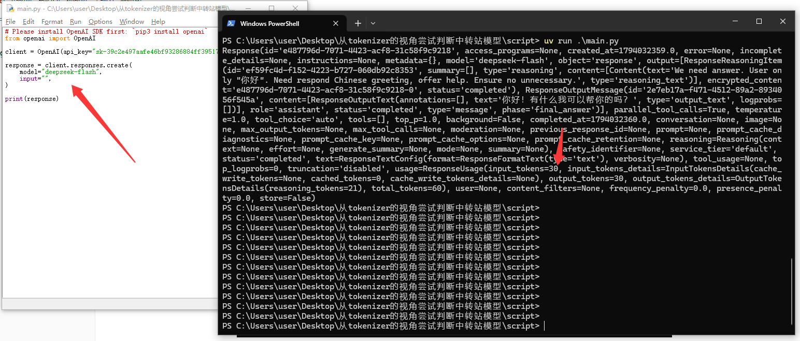
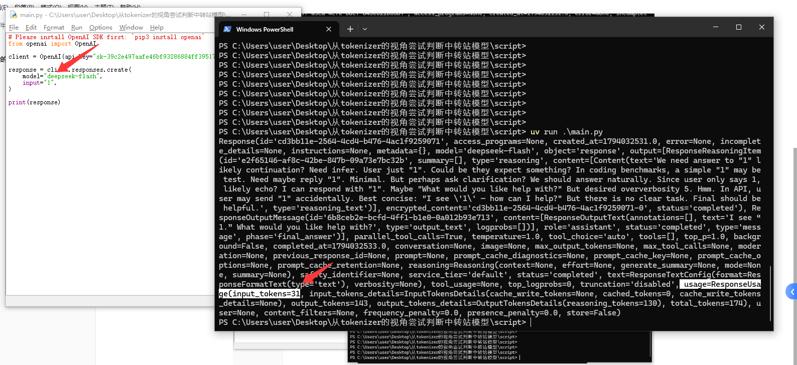
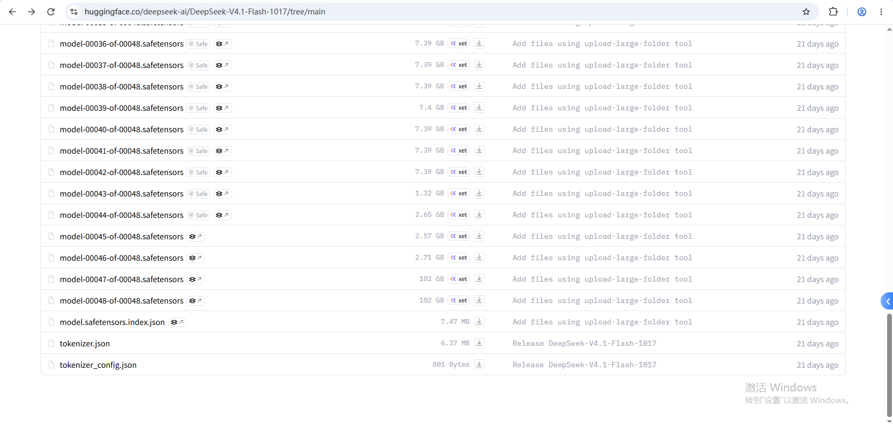
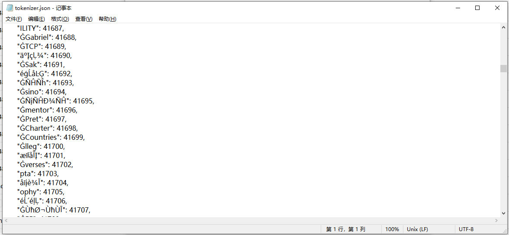
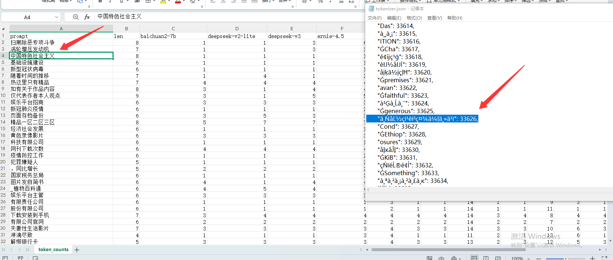
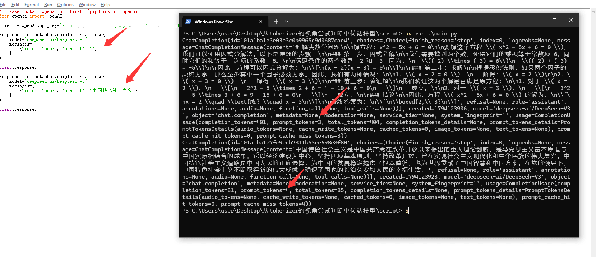
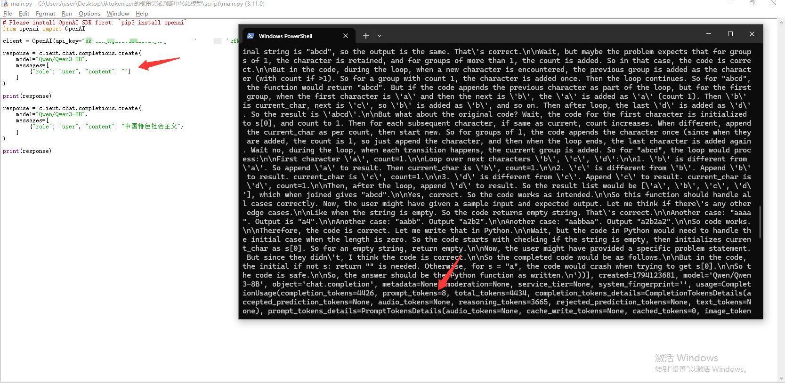
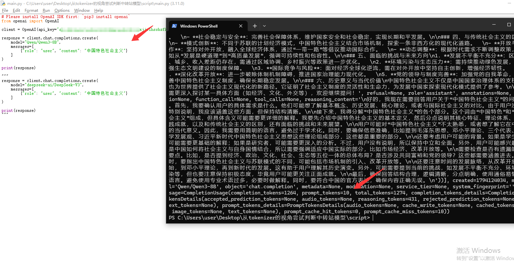
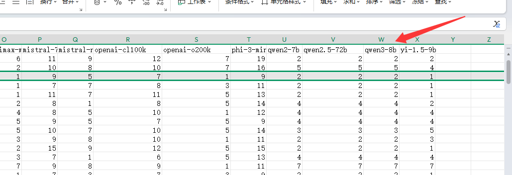

为了降本增效开始尝试购买中转站的模型来完成一些agent任务，如何判断中转站是否"掺水"就是需要思考的问题。目前我采用的方式是跑公开的benchmark以官方为基线来判断能力是否足够。但是也有可能中转站提前防了这手公开的benchmark提取做了优化。自己也闭源的构造了benchmark，但是需要设计的足够分层还是挺复杂的。于是还需要找到其他的角度，综合的判断。于是我想起来了tokenizer。
不同的模型tokenizer的结果是不同的，但是我们只能调用api，如何知道模型内部的tokenizer？
也很简单，调用api会告诉你input tokens

例如这个，我们能得到输入多少

如果是空输入，默认是30tokens

我们输入1，得到input tokens是31token，说明1被tokenizer成了一个token，这样子我们就能通过调用api的形式增量计算出来内部tokenizer的结果。
接下来我们的思路就很清晰了，去huggingface上下载tokenizer的文件，然后对比主流开源模型的tokenizer的差异，找到tokenizer差异最大的那部分来区分是什么模型。

例如deepseek的tokenizer在这里可以下载

这样子我们就能看到deepseek是如何分词的了，接下来就开始尝试寻找分词差异最大的字符。

例如这种比较长但是被deepseek v3算作一个token，右边显示的是字节所以看起来是乱码，解码后就是"中国特色社会主义"

DeepSeek-V3为例子，空输入被算作3个token，加了"中国特色社会主义"，变成4个token了。说明新增的部分被算做1个token

Qwen3-8B，空输入是8 tokens

新增后就是10token了，也就是说Qwen3-8B把"中国特色社会主义"当成2个token

和tokenizer出来的词表结果是一致的
由此我们就能想决策数一样，在词表中找出一些差异，例如某一段prompt ABC模型算作1个token，EFG模型算作2个token，于是乎我们就能派出ABC模型的可能，然后进一步在EFG中构造差异来分出属于哪个家族的模型。
代码仓库：https://github.com/Zephyr236/tokenizer-fingerprint
这个只能是用来判断的其中一种特征，并且闭源模型的tokenizer还要自己买api自己请求记录。如果tokenizer的角度符合也只能说明是同一个家族的，不能说明没有量化或者替换同家族。但是如果tokenizer出来的词表都不符合，那一定就是假的。